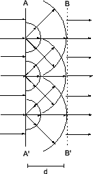

Siguiente: Propagación por difracción
Subir: Propagación sobre terrenos irregulares
Anterior: Propagación sobre terrenos irregulares
Índice General
Principio de Huygens
En general, cuando se analizan los fenómenos de reflexión y
refracción, se asume que las superficies reflectoras y las
regiones refractantes son grandes en comparación a la longitud de
onda del frente incidente. Sin embargo, cuando el frente de onda
encuentra un obstáculo o una discontinuidad que no cumple dicha propiedad, es
posible utilizar el principio de Huygens. Éste se puede deducir de
las ecuaciones de Maxwell, y básicamente dice que cada punto de un
frente de onda se comporta como una fuente puntual de ondas
secundarias. En la figura 4.1 se puede apreciar
como un frente de onda se mueve desde hasta . Las ondas
esféricas generadas por cada punto en se combinan para
generar un nuevo frente de onda en tangencial a todas las
ondas esféricas con igual radio. En la figura también se pueden
ver tres de las ondas esféricas arribando a .
Figura 4.1:
Aplicación sencilla del principio de Huygens
|

|
Dado que el frente de onda debe propagarse hacia una dirección, se
concluye que las ondas generadas por cada punto del
frente de onda no tienen la misma amplitud en todas las
direcciones. Por el contrario, si  es el ángulo formado
entre la dirección de una de las ondas y la dirección de
propagación del frente, entonces la amplitud de dicha onda será
proporcional a
[6]. Considerando
todos los puntos en , se puede hallar la expresión de la onda
en cualquier punto en a través de una integral, cuya
solución muestra que el campo en cualquier punto en es
exactamente igual al campo en el punto más cercano en , salvo
que tiene un retraso en la fase de
.
es el ángulo formado
entre la dirección de una de las ondas y la dirección de
propagación del frente, entonces la amplitud de dicha onda será
proporcional a
[6]. Considerando
todos los puntos en , se puede hallar la expresión de la onda
en cualquier punto en a través de una integral, cuya
solución muestra que el campo en cualquier punto en es
exactamente igual al campo en el punto más cercano en , salvo
que tiene un retraso en la fase de
.
Subsecciones
Siguiente: Propagación por difracción
Subir: Propagación sobre terrenos irregulares
Anterior: Propagación sobre terrenos irregulares
Índice General
SAPO